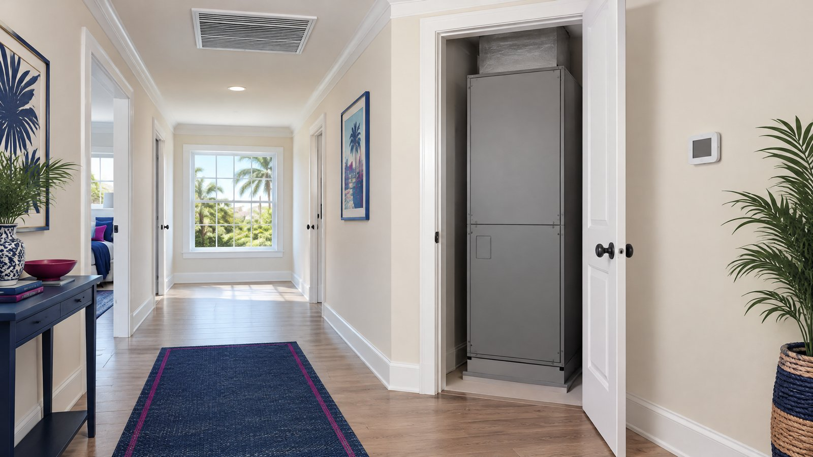

A Burning Odor Is a Warning, Not a Parts Diagnosis
An unexpected burning smell when cooling starts can indicate an electrical problem, but the smell alone cannot tell you which part is involved—or whether the source is inside the AC at all. A nearby outlet, another appliance or building wiring can produce an odor that seems to arrive with the airflow. Do not open cabinets or follow the smell through the house to settle that question.
The Electrical Safety Foundation International identifies a burning smell among warning signs of an overload or wiring problem and recommends inspection by a qualified electrician. Its advice also lists flickering lights, discoloration and buzzing. These are reasons to report a concern, not a checklist to touch equipment or prove a particular failure. [1]
“The odor appeared when cooling started” is useful information. “The blower motor burned out” is a diagnosis that needs professional evidence. Keep the first statement and let the appropriate responders and service professionals establish the second.
For an Unexplained Burning Smell, Leave and Call 911
Do not wait for visible flames before responding to a possible fire. Watch Hill Fire Department advises residents to evacuate and call 911 for possible fire indicators, including burning smells or light smoke. It specifically warns against spending time searching for the source. That is general fire-response guidance from a fire department, not a claim that every odor proves a fire. [2]
If you suspect a fire or smell an unexplained electrical burning odor, get everyone out, call 911 from outside and follow the responders' instructions. Do not delay leaving to change thermostat settings, switch a breaker, retrieve service paperwork or take photographs. The U.S. Fire Administration emphasizes immediate escape in a home fire and preparing an outside meeting place. [3]
A routine HVAC appointment is not a substitute for an emergency response. On The Way's Emergency AC Repair service is an equipment service, not fire dispatch. Contact the fire department first when a fire may be involved.
Do Not Run Another Cooling Cycle to Test the Smell
Once the immediate concern has been addressed, leave the equipment as the responders or qualified professional direct. Do not restart cooling to see whether the odor returns. Do not move from Cooling to Fan On as an improvised test: changing a thermostat mode does not establish that the equipment or electrical supply has been cleared for operation.
The disappearance of an odor after shutdown is not a completed inspection. Nor does a running fan prove that the wiring, controls and other components are operating correctly. Ask who has assessed the equipment and what must happen before operation resumes.
If a breaker also tripped, tell the professional without repeatedly resetting it. Our AC breaker-trip article addresses that separate symptom. Do not replace a fuse, bypass a control or remove a panel to gather more information.
Cooling-Mode Odors Need Their Own Explanation
Do not borrow a first-heating-season explanation for a smell that occurred while the thermostat was requesting cooling. Report the mode shown at the time, including whether the home uses a Heat Pump. If you are unsure, say so rather than switching modes to investigate.
A musty odor is also a different question. Our musty AC startup article discusses moisture-related concerns. That explanation should not be used to dismiss an odor described as burning plastic, scorched material or smoke.
In Tampa and North Tampa homes, cooling may be requested even outside the hottest part of the year. The useful context is what the system was doing when the odor appeared, not an assumption that a November smell must be ordinary heating startup. This article gives no universal “wait a few minutes” allowance.
Share Observations You Already Have
After the emergency has been handled, a brief description helps arrange the correct follow-up. Share when the odor first appeared, the thermostat mode you already saw, where you first noticed it and whether cooling, airflow or other household electrical behavior changed.
Report any smoke, alarm, breaker interruption or responder instructions already observed. Do not reproduce those conditions for a recording. If the fire department provided a finding or directed you not to operate a device, pass that information to the service professional.
Existing invoices can identify the system without another trip to an equipment label. If there are several AC systems, explain which area was running. Missing model information is not a reason to approach a suspect cabinet, an electrical panel or an attic installation.
What Should Follow-Up Assessment Establish?
Ask whether the next visit concerns the HVAC equipment, the home's electrical supply or both. A qualified electrician may be needed for wiring or circuit concerns; an AC repair assessment can address the cooling equipment. Do not assume that a single appointment automatically covers every part of the house's electrical system.
ENERGY STAR's typical maintenance checklist includes electrical connections, motor voltage and current, system controls and blower airflow. It supports the importance of professional operating checks, but it is not a burning-odor diagnostic protocol and does not prove any particular component failed. [4]
Ask for the finding, the work recommended and any restrictions on operation. A named component should come with an explanation of how the assessment supports that recommendation. A resolved immediate fire concern and a completed equipment repair are separate outcomes; clarify what remains before cooling is restarted.
Frequently Asked Questions
Should I wait for smoke before calling about a burning smell?
No. For an unexplained burning odor that may indicate a fire, leave the home and call 911 from outside. Do not spend time searching for the source or waiting for flames; follow the responders' instructions.
Can I restart the AC if the smell stopped when it shut down?
A disappearing smell does not establish that operation can resume. Leave the equipment as directed and ask the responding or qualified professional what assessment is needed before restarting it.
Does a burning smell prove the AC blower motor failed?
No. Odor alone does not identify a component or establish that the source is the AC. Report the cooling sequence you observed and have the equipment or electrical concern assessed rather than prescribing a part.
Editorial Source Review & Publisher
Published by On The Way Heating & Air, a local, family-rooted company serving Tampa and North Tampa. This editorial source review distinguishes fire-response guidance from equipment assessment; it is not a remote diagnosis. Dustin Miller began working in HVAC with his father in 2006 and has helped build several service companies. No customer incident or personal inspection is claimed.
Sources
- Electrical Safety Foundation International: Electrical Safety Dos — Burning odors and other warning signs warrant qualified electrical inspection; not an AC component diagnosis.
- Watch Hill Fire Department: Electrical Warning and Burning-Odor Response — General evacuation and 911 advice for possible fire indicators; published June 14, 2020, live and verified November 23, 2026. Not Tampa-specific dispatch policy or current incident statistics.
- U.S. Fire Administration: Home Fire Escape Plans — Immediate escape and outside meeting-place preparation; not HVAC repair guidance.
- ENERGY STAR: Maintenance Checklist — Professional electrical, control and blower checks; a typical maintenance resource, not a burning-odor diagnostic protocol.